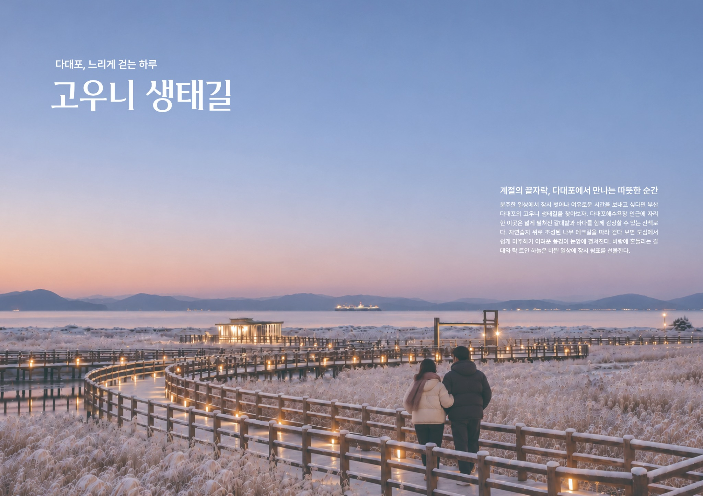
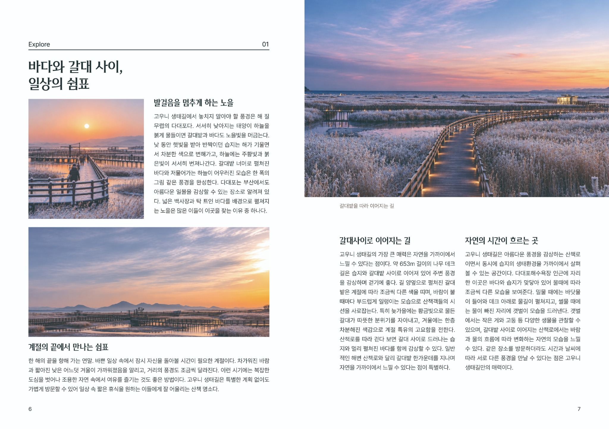
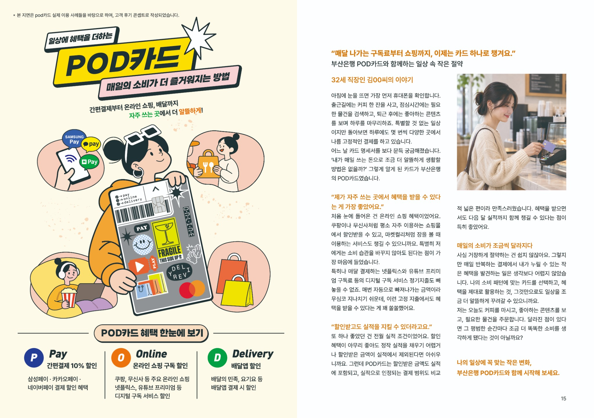
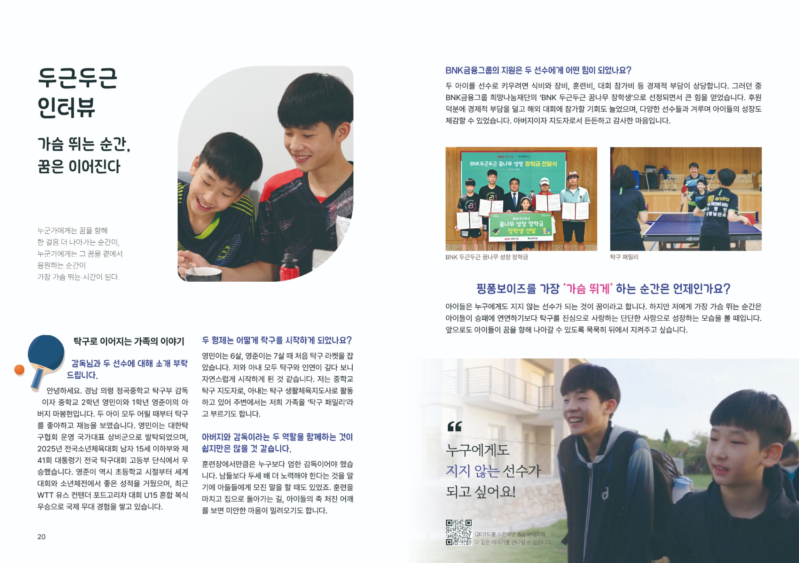
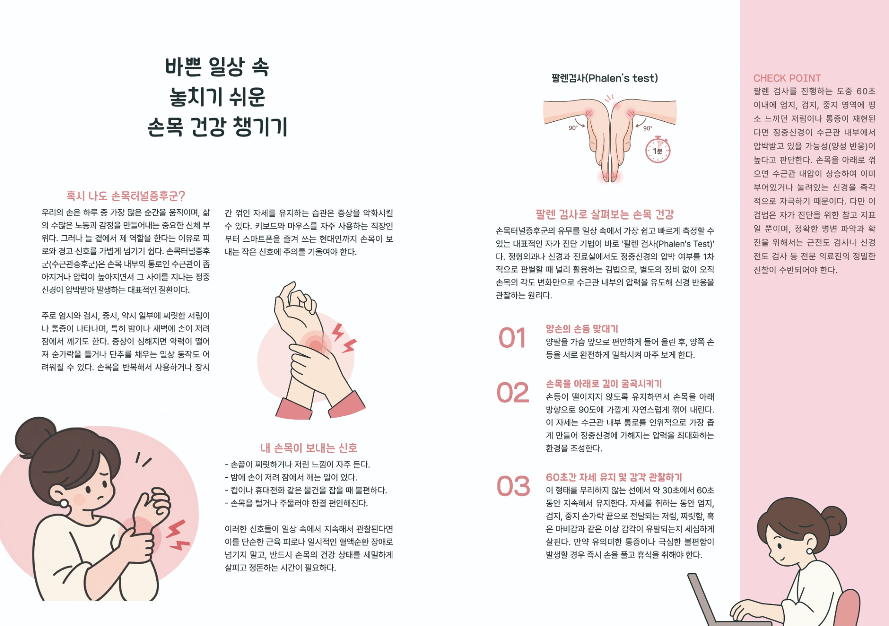

BNK
STORY
2026. 11+12 · VOL. 674
표지
목차
01 느리게 걷는 하루
02 부산은행의 오늘
03 금융, 새롭게
04 변화하는 금융
05 우리 곁의 이야기
06 일상의 즐거움
뒤표지
부산은행 이야기
1 / 15
CONTENTS
2 / 15

고우니 생태길
3 / 15

바다와 갈대 사이, 일상의 쉼표
4 / 15
사람과 기술을 잇다
5 / 15
가능성에 금융을 더하다
6 / 15
59년의 동행, 내일로 이어지다
7 / 15

POD 카드
8 / 15
기업의 성장, 금융의 기회는 공평할까?
9 / 15
기준금리는 그대로인데 대출금리는 왜 오를까?
10 / 15

탁구로 이어지는 가족의 이야기
11 / 15
마음을 잇고, 아이들의 꿈을 키우다
12 / 15
부산의 맛을 찾아서
13 / 15

손목 건강 챙기기
14 / 15
BNK 부산은행
15 / 15
↑ 이전
1 / 15
다음 ↓